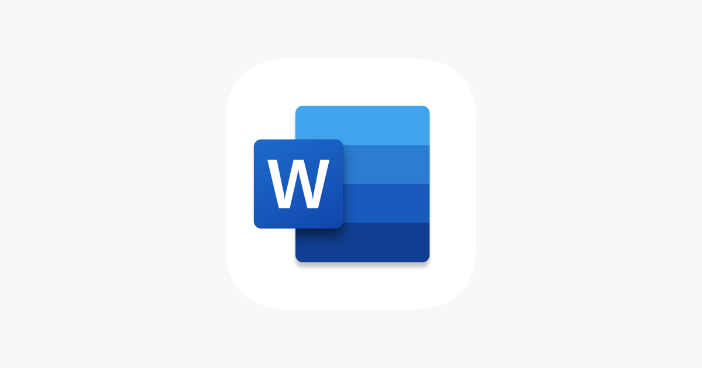

O computador está presente no nosso dia a dia por tanto tempo
que as vezes nem percebemos ou sabemos usar algumas ferramentas dele,
aqui falaremos de algumas ferramentas do pacote Office começando pelo:
O Microsoft Word é um software aplicativo de textos que opera no ambiente Windows. Um processador de textos é um programa usado para criar e editar documentos, visando facilitar o trabalho do usuário nesta tarefa. Este tipo de software torna mais fácil as correções, alterações e impressões de textos, já que o original deixa de ser uma folha de papel, para tornar-se um arquivo em disco. Por esta razão, o Microsoft Word pode ser considerado uma ferramenta muito mais poderosa do que uma máquina de escrever
Você já digitou textos acentuando caracteres? Se nunca fez isto, não precisa se preocupar, pois a acentuação de caracteres no Microsoft Word não é muito diferente da acentuação gráfica em máquinas de escrever. Você deve teclar o acento e, em seguida, o caracter que deve ser acentuado. Quando você tecla o acento, o mesmo não aparece até que você digite o caracter.
Agora, treine um pouco a acentuação em seu micro, digitando palavras como: coração, maçã, sofá, às, ciências, lâmpada, etc. Para apagar qualquer palavra digitada em seu documento, utilize as teclas DELETE ou BACKSPACE. Quando você for mudar para um novo parágrafo, basta pressionar ENTER.